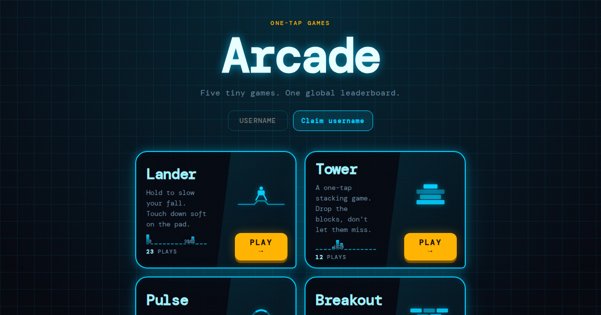

Hi, I'm Sean
AI & Data Leader
I lead data and analytics teams and build AI systems, from agent orchestration to natural-language querying over governed data, that turn trusted data into faster, better business decisions. Based in San Francisco.

About
Building analytics teams and the AI systems behind them
I lead data and analytics teams, building AI systems that make trusted information easier to find, understand, and use.
At Serena & Lily, I lead Data Analytics: AI agent orchestration for development workflows, natural-language querying over governed semantic layers, and automated analytics intake. Earlier roles at Dolls Kill and Williams-Sonoma span company strategy, data infrastructure, forecasting, merchandising, inventory, and omnichannel operations.
Outside work, I build software projects and explore practical uses of AI in analytics. Away from a screen, I'm usually running, hiking, or planning a national park trip.
Experience
Selected leadership impact
Serena & Lily
Luxury home furnishings
Senior Director of Data Analytics
- Built an AI agent orchestrator that chains agents through build and test loops, distributed as reusable skills and MCP servers
- Opened governed semantic-layer data to business users through natural-language querying in Claude
- Set org-wide governance and data-modeling standards across Snowflake and Sigma, giving teams a consistent foundation for self-service analysis
Dolls Kill
Sequoia-backed fashion startup
Head of Analytics & Strategy
- Served on the executive team alongside the CEO, guiding company strategy across cash flow, investments, and operating costs through rapid growth
- Acted as the connective tissue between executives, building each leader's strategy with them and pulling it into one cohesive company story
- Led data engineering, analytics engineering, and BI, building the data and forecasting foundation behind inventory, pricing, and expansion decisions
- Presented quarterly board decks to Sequoia Capital partners and executive leadership
Williams-Sonoma, Inc.
Fortune 500 home furnishings retailer
Director of Strategic Planning
- Rolled out demand-forecasting and replenishment software across Williams Sonoma, West Elm, and Pottery Barn, establishing a shared planning workflow across brands
- Traced forecast instability to uncontrolled model parameters and secured a vendor platform fix
- Delivered buy-online-pickup-in-store and planning tools that connected merchandising and inventory workflows across channels
Technical Projects
Things I've built

TimeSurf.TV
A year-by-year video discovery experience that recreates channel surfing, built in vanilla JavaScript and deployed on Vercel.

Fantasy Football Open
A season-long salary-cap fantasy football game with roster management and global leaderboards, built with React, TypeScript, and PostgreSQL.

One-Tap Arcade
A collection of one-tap browser games with persistent global leaderboards, built in vanilla JavaScript and deployed on Vercel.

Scoracle
Live sports scoring and analytics dashboard.
Skills
Languages, platforms, and tools
 Snowflake
Snowflake
Snowflake
Snowflake
Contact
Interested in data and analytics leadership opportunities?
I'm open to conversations about roles where I can build strong analytics teams, trusted data products, and effective self-service capabilities. The best way to reach me is on LinkedIn.